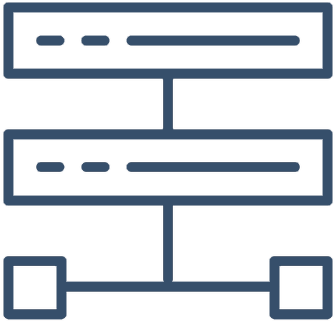

Hello
Jenny graduated with highest honors from the Georgia Institute of Technology with a Bachelor in Computer Engineering. She received a patent and was published for her work in rehabilitative medical technology. Jenny has several years experience in the software industry and most recently worked as a senior technical product manager, where she managed the strategy for several product areas and translated the needs of customers into technical requirements for a major cloud computing provider.
Current roles
Microsoft Azure
Senior Product Manager
2016 - present
- Partnered with teams across the company to drive the vision and delivery of key
functionality for the Azure control plane (Azure Resource Manager)
- Performed extensive user research from ambiguous idea to product design
- Led architecture discussions for new type-agnostic platform functionality
- Evolved the Azure resource provider contract, enforcing compliance and consistency while analyzing the impact and risks that new features could introduce
- Coordinated feature integrations across key cloud governance services such as Azure Policies, Azure Resource Graph, and Azure Management Groups
- Worked collaboratively with development leadership to deliver a cloud-focused
automation, configuration, and operations management feature set to help users
troubleshoot changes
- Managed concept-to-launch of commercial server management solutions
- Collaborated with nearly 200 customers as part of a feature cohort
- Designed portal user experience mockups and draft APIs
- Developed open-source PowerShell scripts to address customer blockers, ease adoption, and increase awareness through GitHub and the PowerShell gallery with the top downloaded script having over 295k downloads
- Presented products at technical conferences across the country
- Microsoft Ignite (2016, 2017, 2018, 2019), the PowerShell 10-year anniversary, the PowerShell Summit (2017, 2018), and the Midwest Management Summit (2018)

Research Lead
Co-Founder, Chief Technical Officer
2021 - present
- Founded a crowdfunding platform for medical research
- Developed the full stack for the platform and websitey
My Skills

Progamming
- PowerShell
- Kusto
- Web Development

Other
- Azure
- Team management
- Product roadmap development
- External product advocacy
- Public speaking
- User experience design
- Moneyball customer research
- Technical design proposals